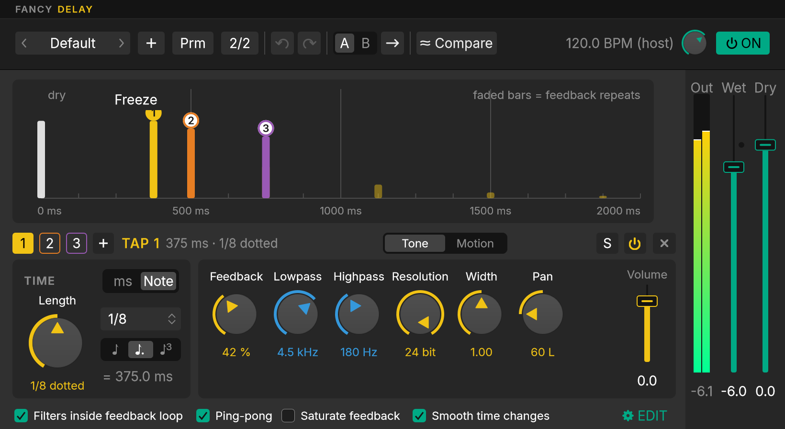

1 · Tap card, Tone page: today's knobs, with the Tone | Motion switch (Decision 3) and the tab letter (Decision 4)
The switch sits in the tap row, after the tap's time, so the cards keep their size. Tone shows today's row. Tap 1 is set to Tape, so its tab carries a small "T" (B for BBD). New items are ringed in yellow here only.

ToneMotion
T
2 · Tap card, Motion page: Character, Amount, Mod rate, Mod depth, Random, Diffusion
The same card with Motion selected. Character is a three-way segment; the knobs are the card's existing size, in the tap's colour. Volume stays on the right. Mod depth at 0 means no modulation; Diffusion at 0 means none.
3 · EDIT drawer: Ducking and Swing (global)
The drawer keeps its size and today's Note multiplier and Output. Ducking is three small knobs in a group; Swing is a small knob, for Note-mode taps. Duck amount at 0 dB is off.
EDIT
Done
Note multiplier
×1
DUCKING